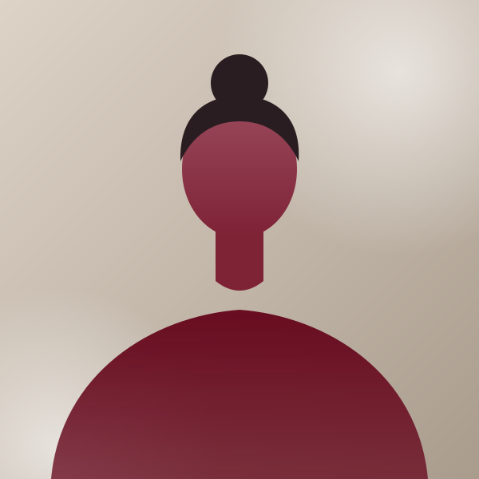
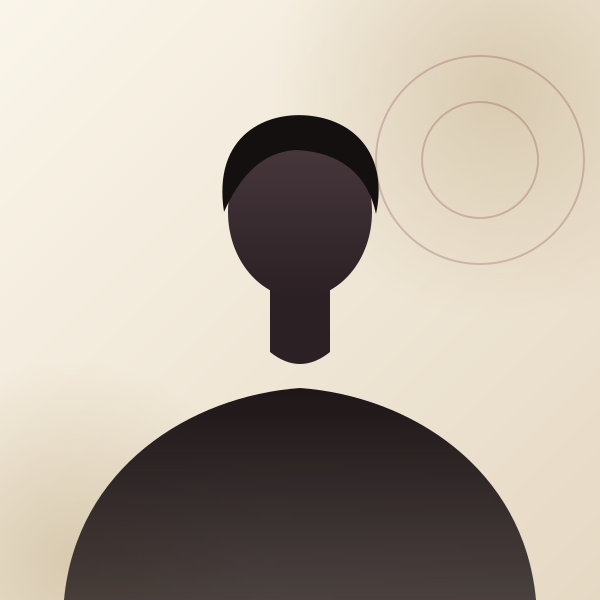
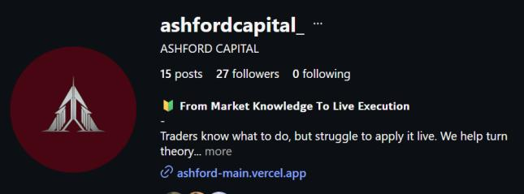
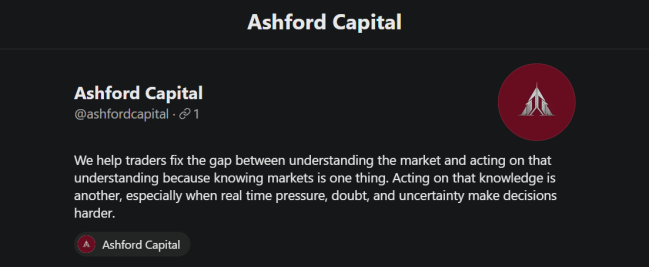
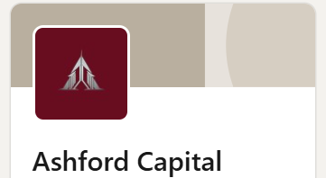

“A genuine line from a client goes here, in their own words.”
Client namePathway, year
We turn what traders know into what they do.
Knowledge is not the gap. Execution is.
Our beliefRead what matters now.
Commit to a thesis and its limit.
Follow the plan, not the feeling.
Judge the process, not the result.
Every review sharpens the next read.
Choose by the ability you need, not the title you want.
Build the ability to interpret.
In fullBuild the ability to decide and execute.
In fullBuild the ability to allocate capital.
In full“A genuine line from a client goes here, in their own words.”
Client namePathway, year
“Shared with permission, never polished for effect.”
Client namePathway, year

Sample“Their experience, written the way they would say it.”
Client namePathway, year

Sample“One honest sentence about what changed for them.”
Client namePathway, year
No profit screenshots. We show how we think.
See the researchWelcome to Ashford Capital.
Thank you.
We will reply with a relevant next step.
Form delivery is not connected yet. Add an endpoint in config.js.
A person replies. Never a signal.
Prefer questions first? Take the short assessment.
Find us where we think out loud.

Follow
Read
ConnectOne idea at a time, in the open.